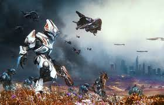

in the game Halo Reach you are playing as the character Nobel Six a semi silent protagonist and at the start of the game you are introduced to the rest of you team which consists of Carter, Jun, Kat, Jorge and Emile.

the game takes place on the planet Reach where the team is sent to investigate possible rebels instead they find the alien Covenant
the team is sent on several misssions were they sabotage multipple Covenant troops
this all escalates to a big battle and severeal missions were all of Nobel Team ends up dead except for Jun who just dips at the end
at the end of the game it is revealed that the entire planet gets glassed and the player dies with the planet